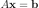
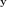
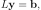
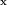
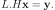

numpy.linalg.cholesky¶
-
numpy.linalg.cholesky(a)[source]¶ Cholesky decomposition.
Return the Cholesky decomposition, L * L.H, of the square matrix a, where L is lower-triangular and .H is the conjugate transpose operator (which is the ordinary transpose if a is real-valued). a must be Hermitian (symmetric if real-valued) and positive-definite. No checking is performed to verify whether a is Hermitian or not. In addition, only the lower-triangular and diagonal elements of a are used. Only L is actually returned.
- Parameters
- a(…, M, M) array_like
Hermitian (symmetric if all elements are real), positive-definite input matrix.
- Returns
- L(…, M, M) array_like
Upper or lower-triangular Cholesky factor of a. Returns a matrix object if a is a matrix object.
- Raises
- LinAlgError
If the decomposition fails, for example, if a is not positive-definite.
See also
scipy.linalg.choleskySimilar function in SciPy.
scipy.linalg.cholesky_bandedCholesky decompose a banded Hermitian positive-definite matrix.
scipy.linalg.cho_factorCholesky decomposition of a matrix, to use in
scipy.linalg.cho_solve.
Notes
New in version 1.8.0.
Broadcasting rules apply, see the
numpy.linalgdocumentation for details.The Cholesky decomposition is often used as a fast way of solving

(when A is both Hermitian/symmetric and positive-definite).
First, we solve for  in

and then for  in

Examples
>>> A = np.array([[1,-2j],[2j,5]]) >>> A array([[ 1.+0.j, -0.-2.j], [ 0.+2.j, 5.+0.j]]) >>> L = np.linalg.cholesky(A) >>> L array([[1.+0.j, 0.+0.j], [0.+2.j, 1.+0.j]]) >>> np.dot(L, L.T.conj()) # verify that L * L.H = A array([[1.+0.j, 0.-2.j], [0.+2.j, 5.+0.j]]) >>> A = [[1,-2j],[2j,5]] # what happens if A is only array_like? >>> np.linalg.cholesky(A) # an ndarray object is returned array([[1.+0.j, 0.+0.j], [0.+2.j, 1.+0.j]]) >>> # But a matrix object is returned if A is a matrix object >>> np.linalg.cholesky(np.matrix(A)) matrix([[ 1.+0.j, 0.+0.j], [ 0.+2.j, 1.+0.j]])